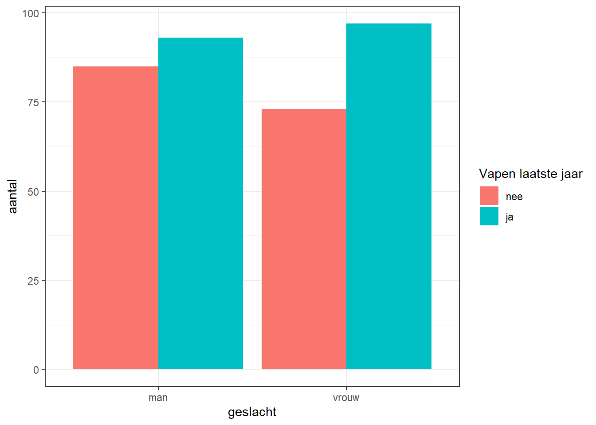
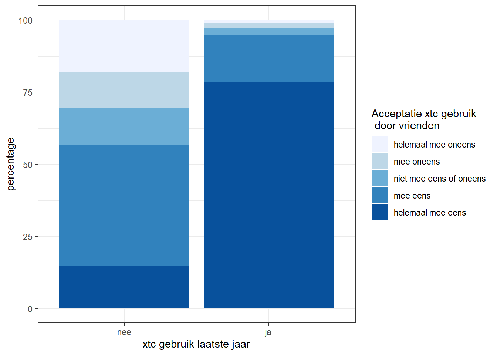
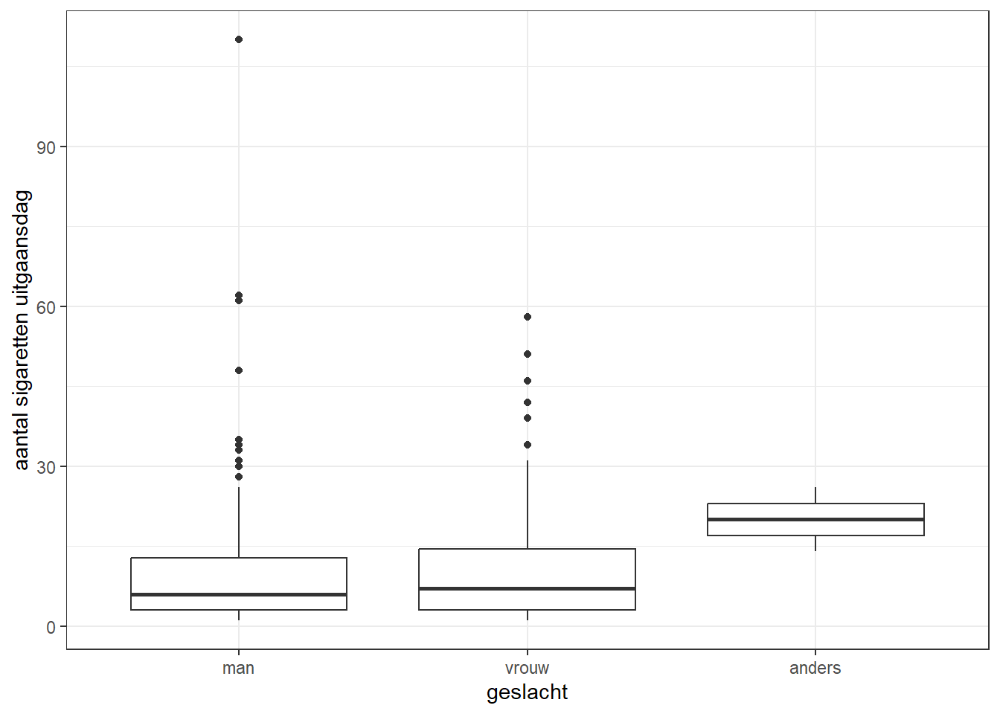
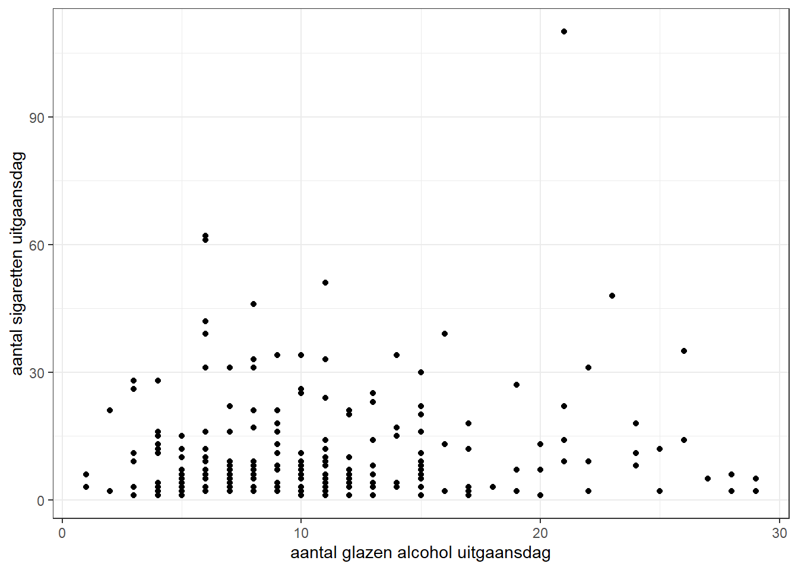
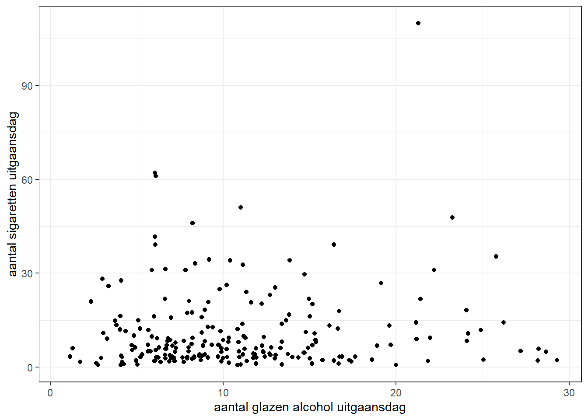
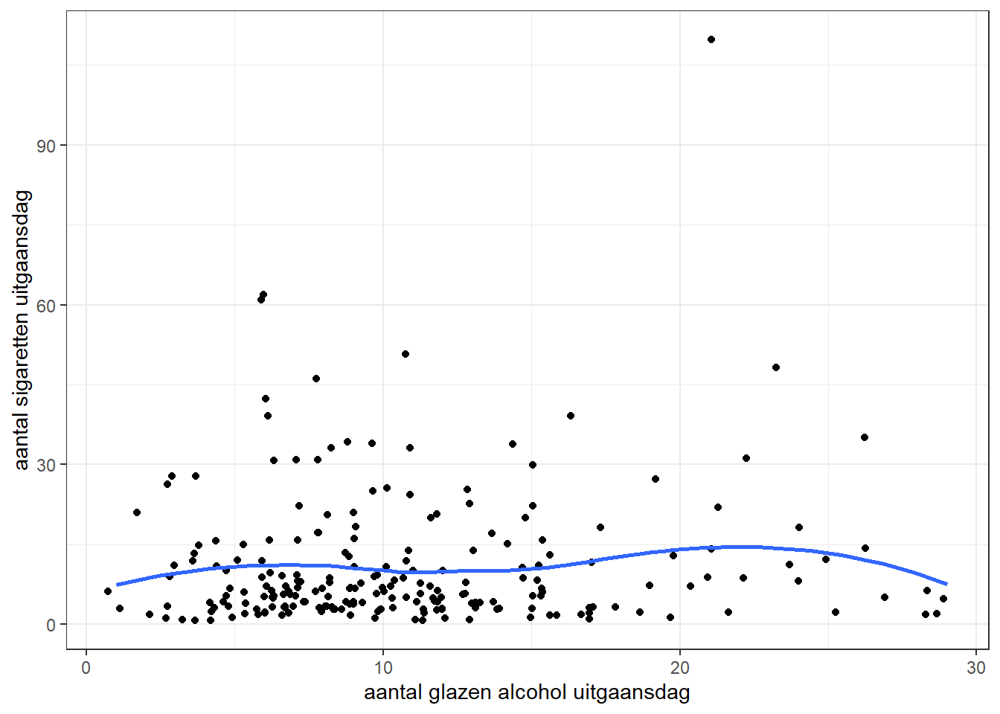

We hebben tot nu toe gekeken naar wat voor verschillende variabelen er zijn (meetniveaus), hoe we de onderliggende data kunnen visualiseren, en met welke statistische maten we deze variabelen kunnen beschrijven. In onderzoek zijn we niet alleen geïnteresseerd in variabelen zelf, maar nog meer in de relaties daartussen. Voor onze dataset zouden we bijvoorbeeld de volgende vragen kunnen stellen:
Wat is het verschil tussen mannen en vrouwen in drugsgebruik?
In hoeverre denken gebruikers anders over de acceptatie van drugs dan niet-gebruikers?
Wat is de relatie tussen verschillende soorten drugsgebruik?
Om dergelijke vragen te beantwoorden, moeten we data van verschillende variabelen met elkaar combineren. Daarbij moeten we ons steeds afvragen hoe we deze relaties inzichtelijk willen maken. Het is goed om te realiseren dat hier niet altijd één juist antwoord voor is. Er zijn meerdere manieren om data en relaties te presenteren, waarbij de creativiteit van de onderzoeker ertoe doet. Over het algemeen zijn er wel gebaande paden die we kunnen volgen.
We letten bij het onderzoeken van relaties tussen variabelen vooral op hun meetniveau. Hebben we bijvoorbeeld te maken met twee kwalitatieve variabelen, één kwalitatief en één kwantitatief, of twee kwantitatieve variabelen? Daaruit kunnen we vaak afleiden wat de handigste manier is om een relatie te presenteren. Denk dus altijd eerst goed na wat het meetniveau van een variabele is.
6.1 Kwalitatief vs. kwalitatief
6.1.1 Nominaal vs. nominaal
Als we de relatie tussen twee nominale variabelen willen presenteren, kunnen we een eenvoudige kruistabel maken in R. We kijken in dit voorbeeld naar de relatie tussen geslacht (man/vrouw/anders) en of men heeft gevapet in het afgelopen jaar (ja/nee). We gaan er hier vanuit dat er geen rangorde bestaat tussen wel of niet vapen en het dus een nominale variabele betreft.
In hoofdstuk xxx hebben we al een tabel gemaakt voor geslacht. We kunnen aan het commando table() een variabele (vapen_laatste_jaar) toevoegen om een kruistabel te krijgen.
# kruistabel tussen geslacht en vapen laatste jaartable(data_uitgaan$vapen_laatste_jaar, data_uitgaan$geslacht) # vapen in de rijen,
man vrouw anders
nee 85 73 0
ja 93 97 2
# geslacht in de kolommen
We zien in bovenstaande tabel hoe vaak personen van een bepaald geslacht hebben gevapet het afgelopen jaar. Zo kun je zien dat 73 vrouwen niet hebben gevapet en 97 wel.
Visueel krijgen we vaak een beter inzicht in de verdeling van variabelen en de relaties daartussen. We kunnen de verdeling voor vapen_laatste_jaar uitgesplitst naar geslacht daarom apart weergeven in een figuur. De meest gangbare manier om de relatie tussen twee variabelen visueel te weergeven is een staafdiagram. We laten voor eenvoud de categorie ‘anders’ even buiten beschouwing hier.
# samenvatten van de relevante datageslacht_vapen <- data_uitgaan |>filter(geslacht !="anders") |># categorie 'anders' eruit laten group_by(geslacht, vapen_laatste_jaar) |># groeperen op variabelensummarise(n =n()) # aantal respondenten per categorie berekenen# staafdiagram maken voor relatie geslacht en vapen ggplot(geslacht_vapen, aes(x = geslacht, y = n, fill = vapen_laatste_jaar)) +geom_col(position ="dodge") +theme_bw() +ylab("aantal") +labs(fill ="Vapen laatste jaar")

We zien nu in een oogoopslag wat de verschillen zijn in aantallen tussen mannen en vrouwen die vapeten het laatste jaar.
De absolute aantallen geven slechts gedeeltelijk inzicht in wat verhoudingen zijn binnen de relatie tussen geslacht en vapen. Daarom is het handig ook de kolompercentages te bereken. Dit doen we door prop.table() toe te voegen aan de kruistabel.
# kolompercentages voor kruistabeltable(data_uitgaan$vapen_laatste_jaar, data_uitgaan$geslacht) |>prop.table(2) # 2 voor kolompercentages (1 voor rijpercentages)
man vrouw anders
nee 0.4775281 0.4294118 0.0000000
ja 0.5224719 0.5705882 1.0000000
We zien nu dat 57,1% van de vrouwen heeft gevapet en 42,9% niet. Bij de mannen ligt dit percentage iets lager (52,2% vs. 47,8%). Je zou dus al (voorzichtig) kunnen concluderen dat vrouwen relatief meer vapen dan mannen.
6.1.2 Nominaal vs. ordinaal
De werkwijze bij het onderzoeken van een relatie tussen nominaal en ordinaal is in principe hetzelfde. We nemen hier de relatie tussen volgende twee variabelen: xtc_laatste_jaar en acceptatie_xtc_vrienden. De eerste variabele meet of respondenten het laatste jaar xtc hebben gebruikt en de tweede variabele meet in hoeverre respondenten het eens zijn met de stelling dat het gebruik van xtc onder vrienden geaccepteerd is.
We bekijken eerst weer de aantallen in een kruistabel.
# kruistabel tussen xtc gebruik en acceptatie onder vriendentable(data_uitgaan$acceptatie_xtc_vrienden, data_uitgaan$xtc_laatste_jaar)
nee ja
helemaal mee oneens 28 2
mee oneens 19 4
niet mee eens of oneens 20 4
mee eens 65 32
helemaal mee eens 23 153
weet niet 0 0
Vervolgens kijken we naar de kolompercentages
# kolompercentages voor kruistabeltable(data_uitgaan$acceptatie_xtc_vrienden, data_uitgaan$xtc_laatste_jaar) |>prop.table(2)
nee ja
helemaal mee oneens 0.18064516 0.01025641
mee oneens 0.12258065 0.02051282
niet mee eens of oneens 0.12903226 0.02051282
mee eens 0.41935484 0.16410256
helemaal mee eens 0.14838710 0.78461538
weet niet 0.00000000 0.00000000
Hier tekent zich al een duidelijk patroon af: onder jongeren die xtc hebben gebruikt, is de acceptatie onder vrienden ook hoog. Bijna alle respondenten in de rechterkolom geven aan het eens (16,4%) of helemaal mee eens (78,5%) met de stelling te zijn. Bij jongeren die niet hebben gebruikt is de acceptatie wat meer verdeeld, al geeft een meerderheid aan dat het gebruik van xtc is geaccepteerd onder hun vrienden (eens: 41,9%, helemaal mee eens: 14,8%).
Als we deze relatie willen visualiseren, kunnen we het beste voor een zogenaamde gestapelde staafdiagram kiezen. Hierin worden de antwoordcategorieën op een variabele als het ware gestapeld binnen een staaf. We kunnen zo’n gestapelde staafdiagram maken voor de kolompercentages.
# samenvatten van de relevante dataxtc_gebruik_acceptatie <- data_uitgaan |>group_by(xtc_laatste_jaar, acceptatie_xtc_vrienden) |>summarise(n =n()) |>mutate(perc =round(n/sum(n) *100, 1)) # percentages berekenen en afronden op 1 decimaal# staafdiagram maken voor relatie geslacht en vapen ggplot(xtc_gebruik_acceptatie, aes(x = xtc_laatste_jaar, y = perc, fill = acceptatie_xtc_vrienden)) +geom_col() +#theme_bw() +ylab("percentage") +xlab("xtc gebruik laatste jaar") +labs(fill ="Acceptatie xtc gebruik \n door vrienden ") +scale_fill_brewer(palette =1) # kleur bepalen van licht naar donkerblauw

Wederom krijgen we direct een indruk van de relatie tussen deze twee variabelen. Acceptie van xtc gebruik is over het algemeen hoog onder vrienden, maar relatief veel meer bij vrienden van jongeren die zelf xtc gebruiken.
Kruistabellen en (gestapelde) staafdiagrammen zijn ook goed toepasbaar voor het onderzoeken van de relatie tussen twee ordinale variabelen (dit behandelen we niet verder hier). Alleen als je variabelen heel veel categorieën hebben, moet je wellicht nadenken over een alternatief.
6.2 Kwalitatief vs. kwantitatief
We beschikken over verschillende opties wanneer we de relatie tussen een kwalitatieve en kwantitatieve variabele willen onderzoeken. De meest eenvoudige optie is om naar het verschil in gemiddeldes te kijken. Als voorbeeld kijken we hier naar geslacht en het aantal sigaretten dat men rookt tijdens het uitgaan (sigaretten_uitgaansdag). Let op dat hier alleen gaat over jongeren die minimaal één sigaret roken tijdens het uitgaan (rokers).
We berekenen het gemiddelde door de data eerst te groeperen en daarna het gemiddelde per groep te berekenen. Hoe je dat moet doen, leer je in het practicum.
# gemiddelde berekenen van van aantal sigaretten voor geslachtdata_uitgaan |>group_by(geslacht) |>filter(!is.na(sigaretten_uitgaansdag)) |># respondenten die niet roken eruit latensummarise(gem_sigaretten =mean(sigaretten_uitgaansdag)) # summarise() en mean() voor gemiddelde berekenen
# A tibble: 3 × 2
geslacht gem_sigaretten
<fct> <dbl>
1 man 11.1
2 vrouw 11.2
3 anders 20
Je ziet dat zowel mannen als vrouwen gemiddeld zo’n 11 sigaretten per uitgaansdag roken. Er is dus niet echt een verschil tussen deze groepen. Bij de anders-identificerenden ligt dit aantal hoger (20), maar dit is een kleine groep wat betekent dat het meer afhankelijk is van wie er toevallig in de dataset zit.
Het verschil in gemiddeldes geeft nog niet zoveel inzicht in de distributie van verschillende groepen. Het kan zijn dat er onderling variatie is in het rookgedrag tussen mannen en vrouwen. Je kunt een doosdiagram voor beide groepen maken om hier meer inzicht in te krijgen.
# doosdiagram met aantal sigaretten naar geslachtggplot(data_uitgaan, aes(x = geslacht, y = sigaretten_uitgaansdag)) +geom_boxplot() +theme_bw() +ylab("aantal sigaretten uitgaansdag")

Deze doosdiagrammen zien er wat anders uit dan in hoofdstuk xxx, omdat we hier met meer extreme waarden te maken hebben. Zo geeft de bovenste punt bij de mannen aan dat één respondent meer dan 100 sigaretten heeft gerookt. Gelet op de spreiding, is de afstand tussen Q1, Q2 en Q3 wat groter bij vrouwen dan mannen. Het lijkt er dus op dat bij de mannen meer extreme waarden voorkomen, terwijl bij de vrouwen er in het midden van de verdeling (interkwartielafstand) wat meer spreiding is.
Ook hier geldt weer: het onderzoeken van een beschrijvende relatie tussen ordinaal vs. kwantitatief kan doorgaans op dezelfde wijze als bij nominaal vs. kwantitatief.
6.3 Kwantitatief vs. kwantitatief
Als laatste onderzoeken we de relatie tussen twee kwantitatieve variabelen. Het makkelijkst is om deze relatie direct te visualiseren (later in de cursus kijken we naar correlatie, een associatiemaat voor de sterkte van de relatie). We nemen de relatie tussen het aantal glazen alcohol op een uitgaansdag (glazen_alcohol_uitgaansdag) en het aantal gerookte sigaretten. Het gaat hier om jongeren die dus zowel alcohol drinken als roken tijdens het uitgaan. Verder zijn dit twee ratio variabelen (bedenk waarom).
Om de relatie te visualiseren, maken we eerst gebruik van een spreidingsdiagram.
# spreidingsdiagram met aantal glazen alcohol en sigarettenggplot(data_uitgaan, aes(x = glazen_alcohol_uitgaansdag, y = sigaretten_uitgaansdag)) +geom_point() +theme_bw() +xlab("aantal glazen alcohol uitgaansdag") +ylab("aantal sigaretten uitgaansdag")

Elke punt vertegenwoordigd een respondent in deze diagram, die laat zien hoe ze scoren op aantal glazen alcohol (x-as) en aantal sigaretten (y-as) tijdens het uitgaan. Er komt hier nog niet een heel duidelijk patroon uit naar voren. Zowel bij jongeren die relatief weinig drinken (10< glazen) zijn er wat uitschieters naar boven qua roken (>30 sigaretten), maar ook bij jongeren die relatief veel drinken. De dichste concentratie van punten zit linksonder, wat betekent dat de meeste respondenten rond de 5-15 glazen alcohol drinken en 1-15 sigaretten roken.
We kunnen de spreidingsdiagram nog wat aanpassen om beter inzicht te krijgen in de relatie. Sommige punten zijn nu niet goed te zien omdat ze dicht op elkaar zitten. Met die optie “jitter” wordt de puntenwolk wat meer uitgespreid.
# spreidingsdiagram met aantal glazen alcohol en sigarettenggplot(data_uitgaan, aes(x = glazen_alcohol_uitgaansdag, y = sigaretten_uitgaansdag)) +geom_point(position ="jitter") +# jitter toevoegentheme_bw() +xlab("aantal glazen alcohol uitgaansdag") +ylab("aantal sigaretten uitgaansdag")

Je ziet nu iets beter waar de concentratie van datapunten zit. Verder kun je kijken in hoeverre er een (lineair) verband is tussen aantal glazen alcohol en aantal sigaretten. Je kunt een zogenoemde regressielijn ‘fitten’ op de data met stat_smooth().
# spreidingsdiagram met aantal glazen alcohol en sigarettenggplot(data_uitgaan, aes(x = glazen_alcohol_uitgaansdag, y = sigaretten_uitgaansdag)) +geom_point(position ="jitter") +theme_bw() +xlab("aantal glazen alcohol uitgaansdag") +ylab("aantal sigaretten uitgaansdag") +stat_smooth(method = loess, se =FALSE)

De lijn toont dat er geen duidelijk verband is tussen aantal glazen alcohol en aantal sigaretten. Over het algemeen blijft deze vrij vlak en gaat niet duidelijk één richting op.
6.4 Tot slot
Dit hoofdstuk heeft geïllustreerd hoe je relaties tussen variabelen kan beschrijven, zowel door tabellen en visualisaties. Daarbij is het belangrijk om het meetniveau van beide variabelen te weten. Besteed ook aandacht aan de interpretatie: waaraan kun je aflezen hoe een bepaalde relatie in elkaar zit? Daarvan zijn enkele voorbeelden gegeven. Zo weet je na dit hoofdstuk bijvoorbeeld:
Dat vrouwen iets vaker vapen dan mannen
Acceptatie onder vrienden van xtc hoger is onder gebruikers dan niet-gebruikers
Mannen en vrouwen gemiddeld evenveel roken, maar de onderlinge variatie net wat anders is
Er geen duidelijke relatie is tussen het aantal glazen alcohol dat men drinkt en aantal sigaretten dat men rookt op een uitgaansdag